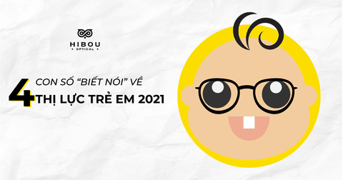
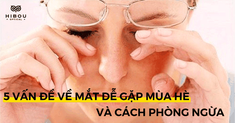
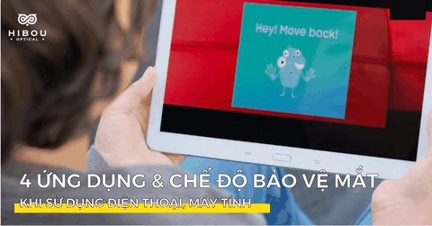
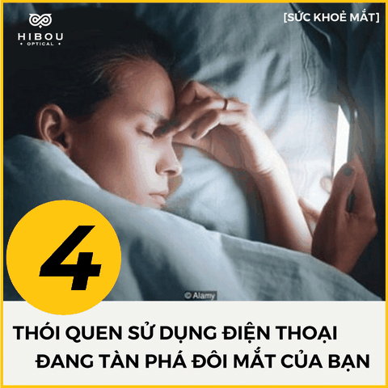
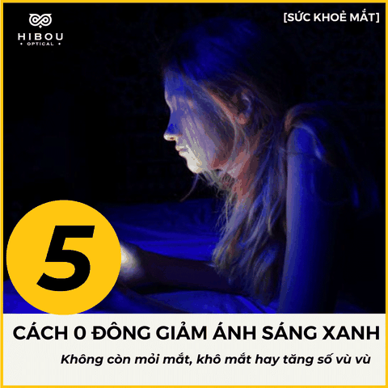
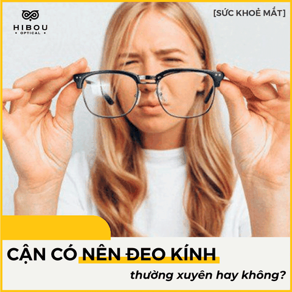
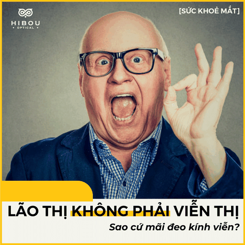

Blog
Sức khỏe cho đôi mắt
Danh mục tin tức
Tin tức nổi bật

[Infographic] Thông tin về sức khoẻ mắt trẻ em
Kính mắt là phụ kiện bảo vệ mắt khỏi những tia sáng có hại như tia UV và những tia sáng

5 vấn đề về mắt bạn dễ gặp trong mùa hè 2021
Thời tiết chuyển từ mùa nắng sang mùa mưa gắn liền với nhiều bệnh mắt mùa hè. Không chỉ
có ánh nắng, môi trường ô nhiễm ảnh hưởng đến đôi mắt mà mưa dai dẳng tạo điều kiện
thuận lợi cho vi khuẩn phát triển cũng là nguyên nhân của các bệnh như: viêm kết mạc,
đỏ mắt, ngứa mắt, xốn mắt…

4 chế độ và ứng dụng bảo vệ mắt khi sử dụng điện thoại IOS và ANDROID
Dẫu biết ánh sáng xanh màn hình là kẻ thù số 1 tàn phá đôi mắt hiện nay nhưng điện
thoại đã trở thành vật bất li thân trong cuộc sống hiện đại. Để hạn chế các tác hại của
ánh sáng xanh từ màn hình tới mắt, bạn hãy tham khảo ngay 4 chế độ và ứng dụng bảo vệ
mắt sau từ Hibou nhé.
Sức khỏe đôi mắt
[Infographic] Thông tin về sức khoẻ mắt trẻ em
Kính mắt là phụ kiện bảo vệ mắt khỏi những tia sáng có hại như tia UV và những
tia sáng
5 vấn đề về mắt bạn dễ gặp trong mùa hè 2021
Thời tiết chuyển từ mùa nắng sang mùa mưa gắn liền với nhiều bệnh mắt mùa hè.
Không chỉ có ánh nắng, môi trường ô nhiễm ảnh hưởng đến đôi mắt mà mưa dai
dẳng tạo điều kiện thuận lợi cho vi khuẩn phát triển cũng là nguyên nhân của
các bệnh như: viêm kết mạc, đỏ mắt, ngứa mắt, xốn mắt…
4 chế độ và ứng dụng bảo vệ mắt khi sử dụng điện thoại IOS và ANDROID
Dẫu biết ánh sáng xanh màn hình là kẻ thù số 1 tàn phá đôi mắt hiện nay nhưng
điện thoại đã trở thành vật bất li thân trong cuộc sống hiện đại. Để hạn chế
các tác hại của ánh sáng xanh từ màn hình tới mắt, bạn hãy tham khảo ngay 4
chế độ và ứng dụng bảo vệ mắt sau từ Hibou nhé.
6 CÁCH BẢO VỆ MẮT KHI DÙNG MÁY TÍNH CHO DÂN VĂN PHÒNG
Bảo vệ mắt là việc hết sức quan trọng với những người làm việc với máy tính
hàng ngày. Đặc biệt là dân văn phòng. Tiếp xúc nhiều với máy tính là nguyên
nhân chính gây rối loạn thị giác hay còn gọi là hội chứng thị giác màn hình.
Bạn sẽ cảm thấy nhức mỏi mắt, khô mắt, chảy nước nước, nhìn mọi thứ mờ mờ và
mỏi cổ vai gáy… Để khắc phục tình trạng ngày, hãy cùng Hibou tham khảo ngay 6
cách đơn giản bảo vệ mắt khi ngồi máy tính hàng ngày, hàng giờ sau đây.
5 bài tập cho mắt thư giãn nên thực hiện khi dùng máy tính
Ánh sáng xanh từ máy tính sẽ dễ gây rối loạn não, khiến bạn bị buồn ngủ và làm
giảm năng suất công việc. Hơn nữa, nếu bạn không sớm chú ý đến các tình trạng
khó chịu ban đầu của mắt thì sẽ làm tăng nguy cơ mắc bệnh về mắt như: cận thị,
viễn, loạn, đục thủy tinh thể, thoái hóa điểm vàng

4 thói quen dùng điện thoại tàn phá đôi mắt của bạn nhất
Phải đeo 2 cặp kính khi xem phim 3D, mờ mịt khi đi bơi, ghét ra đường mỗi khi
mùa mưa đến… là những nỗi khổ muôn đời của dân cận thị. Thế nhưng, không phải
“4 mắt” nào cũng có thể biết cách bảo vệ mắt trước các tác nhân gây hại. Đặc
biệt là điện thoại - vật bất ly thân với giới trẻ trong thời đại hiện nay. 4
thói quen khó bỏ dưới đây đã khiến “hội nhìn đời bằng 2 đít chai” phải liên
tục kết bạn với những cặp kính cận mới - càng ngày càng dày hơn.

5 cách 0 đồng bảo vệ mắt khỏi ánh sáng xanh từ màn hình
Hiện nay, chúng ta hàng ngày phải tiếp xúc với ánh sáng xanh ngày càng nhiều
qua các thiết bị điện tử như điện thoại, máy tính. Khoảng cách giữa mắt và màn
hình máy tính quá gần sẽ gây tổn thương vĩnh viễn. Vậy, làm sao để làm giảm
ánh sáng xanh từ màn hình máy tính?

Cận thị có cần đeo kính thường xuyên không?
Nhiều người bị cận những không muốn đeo kính, vì sợ mắt bị dại, bị lồi, lác.
Đa số người cân thường thắc mắc là khi bị cận thì có nhất thiết phải đeo kính
cả ngày không. Nếu bạn cũng có chung nghi vẫn này, hãy theo dõi bài viết sau
của Hibou để có câu trả lời nhé.

TẠI SAO LÃO THỊ KHÔNG NÊN ĐEO KÍNH VIỄN?
Không giống như viễn thị và cận thị được phân biệt rất rõ, nhiều người thường
lầm tưởng rằng viễn thị và lão thị cùng là một bệnh. Tuy nhiên điều này là
không đúng, viễn thị và lão thị có một số đặc điểm chung nhưng nguyên nhân gây
ra bệnh lại rất khác nhau. Do đó, các điều trị của lão thị cũng khác hoàn toàn
viễn thị.